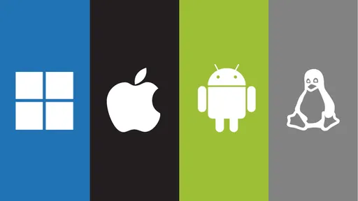

Sistema Operacional
 Um sistema operacional é fundamentalmente um software, pode ser o Linux, Windows, Android, macOS, UNIX. No entanto, não resume aquilo que seus olhos conseguem ver ou ao que você consegue interagir. Em outras palavras, é um programa que conversa diretamente com o hardware da sua máquina. O sistema operacional assegura que os programas funcionem corretamente. Mas antes de entendermos o que é um sistema operacional, precisamos definir o que é um sistema computacional.
Voltar Editor de texto é um software ou ferramenta online que permite a redação e edição de peças de conteúdo
escrito. Ele é a base da produção de conteúdo de empresas e de pessoas que querem publicar na internet
ou em meios físicos. Os exemplos mais conhecidos de editor de texto são o Microsoft Word e o Google
Docs.
Editor de texto é um software ou ferramenta online que permite a redação e edição de peças de conteúdo
escrito. Ele é a base da produção de conteúdo de empresas e de pessoas que querem publicar na internet
ou em meios físicos. Os exemplos mais conhecidos de editor de texto são o Microsoft Word e o Google
Docs.